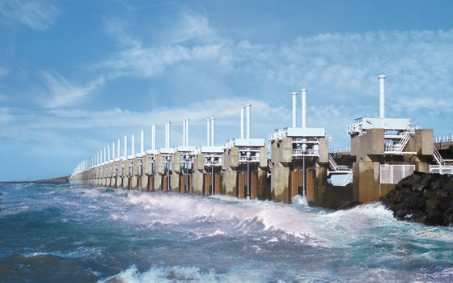

History
The people who live in the Netherlands are called the Dutch. The land was originally inhabited by Germanic tribes. A portion of the land became a Roman province that was conquered by Julius Caesar in the first century BC. Later, the land became part of the empire of the Franks, then the House of Burgundy, and eventually became part of the Habsburg Empire.
During the 17th century the Netherlands became an international power known for its strong navy. The Dutch empire expanded throughout the world
In the 1900s, the Netherlands tried to stay neutral during both World Wars. They managed to avoid getting involved in the First World War, but in World War II they were occupied by Germany.
Over 75 percent of the 140,000 Jewish people that lived in the Netherlands were killed by the Germans as part of the Holocaust. Famous Jewish girl Anne Frank wrote of hiding from the Nazis in Amsterdam before getting captured and taken to a concentration camp to die.
Anne Frank
Problems with the floods...
Flood control is an important issue for the Netherlands, as due to its low elevation, approximately two thirds of its area is vulnerable to flooding, while the country is densely populated. Natural sand dunes and constructed dikes, dams, and floodgates provide defense against storm surges from the sea.
Oosterschelde dike